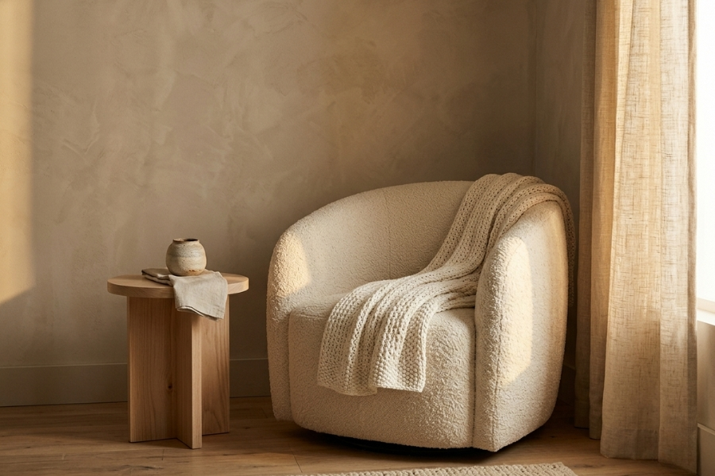

Velvet & Cradle began the way all beautiful things do — with a question. What would the perfect nursery look like, if nothing was left to compromise?

It started with a daughter's room. A mother with a deep love for interiors and an eye trained on the details — the way light falls across linen at dusk, the weight of a well-made throw, the quiet confidence of a piece of furniture built to last a lifetime. When the nursery came, so did the question: why was everything either practical or beautiful, but so rarely both?
Velvet & Cradle was the answer. A space where luxury and intention meet — where every recommended piece has earned its place not through trend, but through considered design, honest materials, and lasting quality.
We believe the nursery is the first room a child will ever know. That the quality of that space — its calm, its warmth, its beauty — matters in ways we are only beginning to understand. We don't take that lightly.
We believe in fewer, better things. In natural materials over synthetic shortcuts. In pieces that will be passed down, not discarded. In the kind of quiet luxury that whispers rather than shouts.
The nursery is not just a room — it is the first world a child inhabits. It deserves the same intention we give to everything else we love.
— Velvet & Cradle
Every piece featured on Velvet & Cradle passes through the same quiet filter: would we place this in the room we imagined for that first daughter? If the answer is anything less than yes, it doesn't make the edit.
We prioritise natural fibres, solid wood, and non-toxic finishes. What touches your baby's skin and surrounds their first breaths should be as pure as possible.
Trend has no place here. We look for pieces with the quiet confidence to remain beautiful long after the nursery becomes a bedroom, and the bedroom becomes a memory.
Every recommendation is made with intention. We would rather show you three perfect things than thirty adequate ones.
Receive weekly curated nursery inspiration and exclusive early access to our designer guides directly in your inbox.